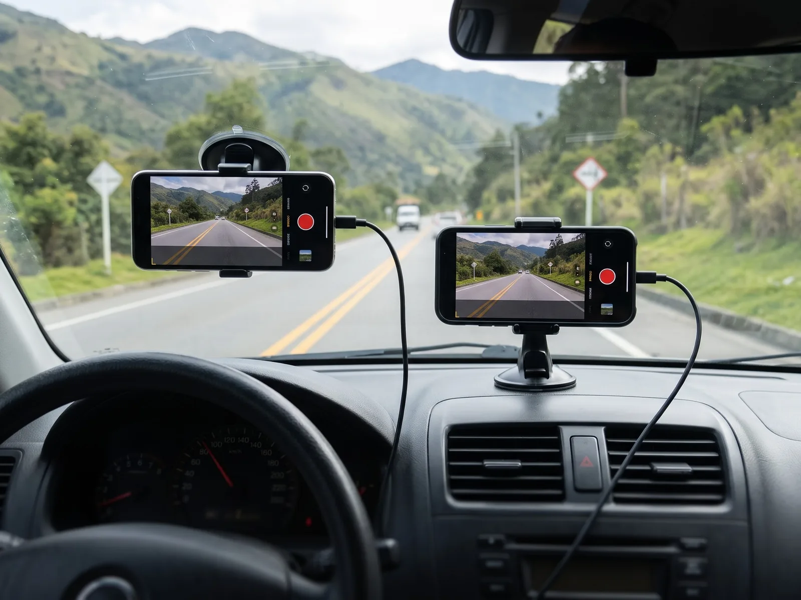
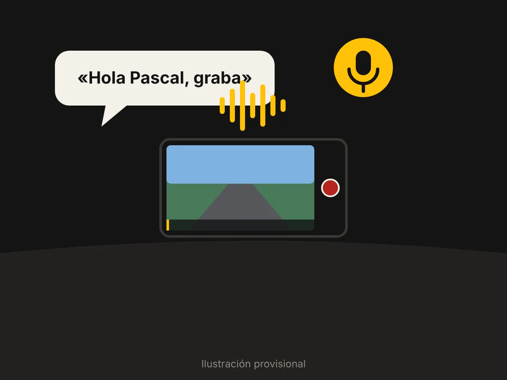
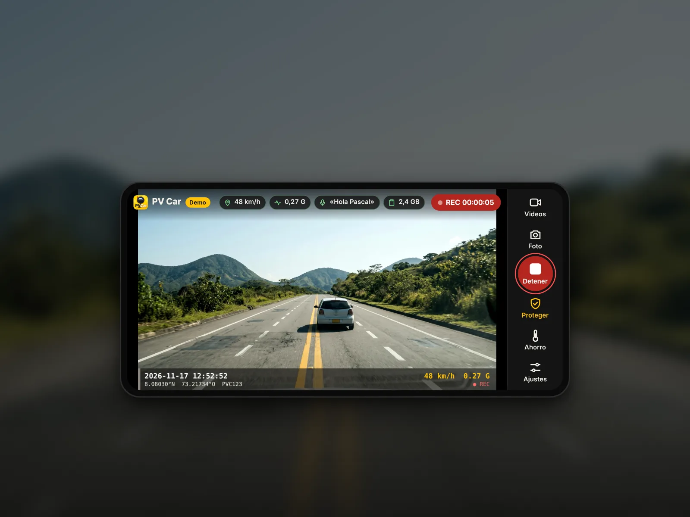
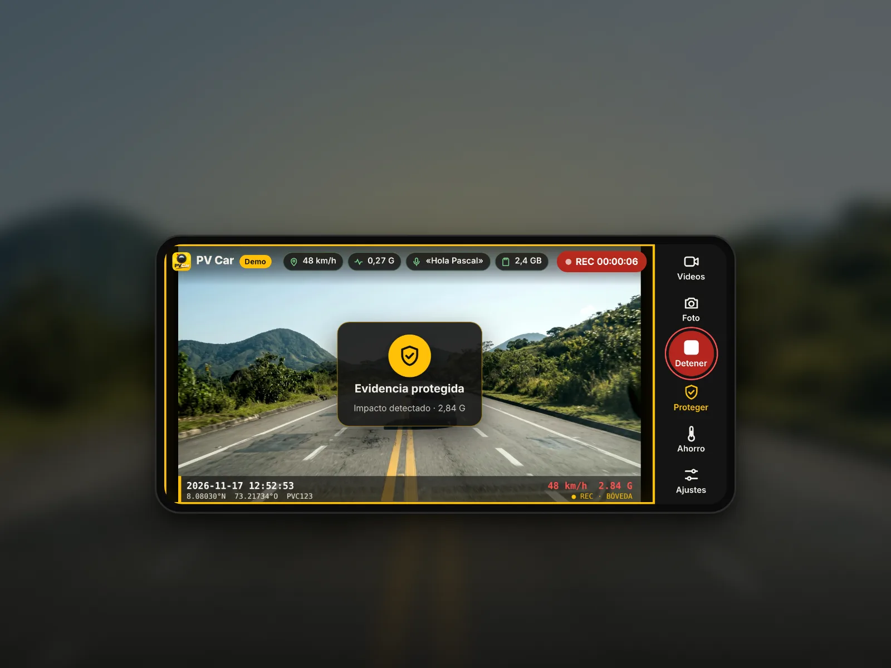

Pon el teléfono en un soporte fijo, mirando hacia la vía,y toca Grabar.
Detenido
El acta incluye la huella SHA-256 del archivo, la telemetría y tu firma. Se genera en el teléfono: nada se envía a internet.
Alcanza para — continuas. Al llenarse se borra el clip más antiguo que no esté protegido.
Un golpe por encima del umbral pasa el clip actual y el anterior a la bóveda. En vías destapadas usa «Baja».
Aún no ha oído nada.
Apagado por defecto. En algunos Android no puede usarse a la vez que el copiloto por voz.
Funciona con la app abierta y el GPS activo. La detención automática solo aplica a las grabaciones que empezaron solas.
Videos, fotos, ubicación y telemetría se guardan solo en el almacenamiento privado de esta app en tu teléfono. PV Car no los envía a ningún servidor, no usa analítica ni publicidad, y nunca lee tu galería. Solo salen del teléfono si tú los descargas o compartes.
Responsable: PascalIA · Política de datos · Términos de PV Car · Eliminar mis datos · Aviso legal

En un soporte fijo del parabrisas o del tablero, en horizontal, con la cámara trasera hacia la vía y conectado al cargador.
Que no tape tu visión. Configura todo antes de arrancar: mientras conduces, usa la voz.

Toca Grabar, di «Hola Pascal, activa la grabación» o deja que empiece sola cuando el carro arranque (en Ajustes › Automatización).

Fecha, hora, coordenadas, velocidad, fuerza G y placa sobre cada imagen. Graba en bucle dentro del espacio que elijas, sin tocar tus fotos ni tus archivos.

Un golpe fuerte, el botón Proteger o «Okay Pascal, guarda este video» pasan el clip a la bóveda. Después sacas un acta PDF con huella SHA-256 y tu firma.
Pediremos cámara, ubicación y, si activas el copiloto, micrófono. Todo queda en el teléfono. Mantén la app abierta y la pantalla encendida mientras grabas.
Una guía práctica, no asesoría legal. Ante dudas, consulta a tu aseguradora o a un abogado.